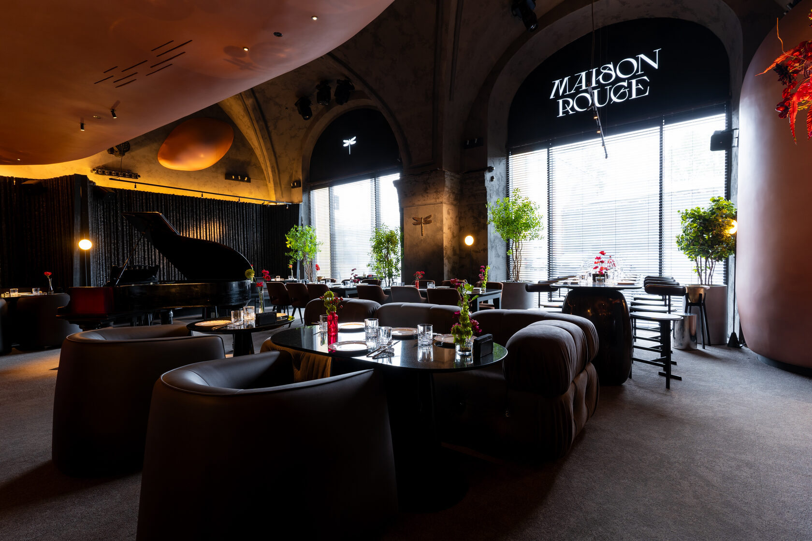
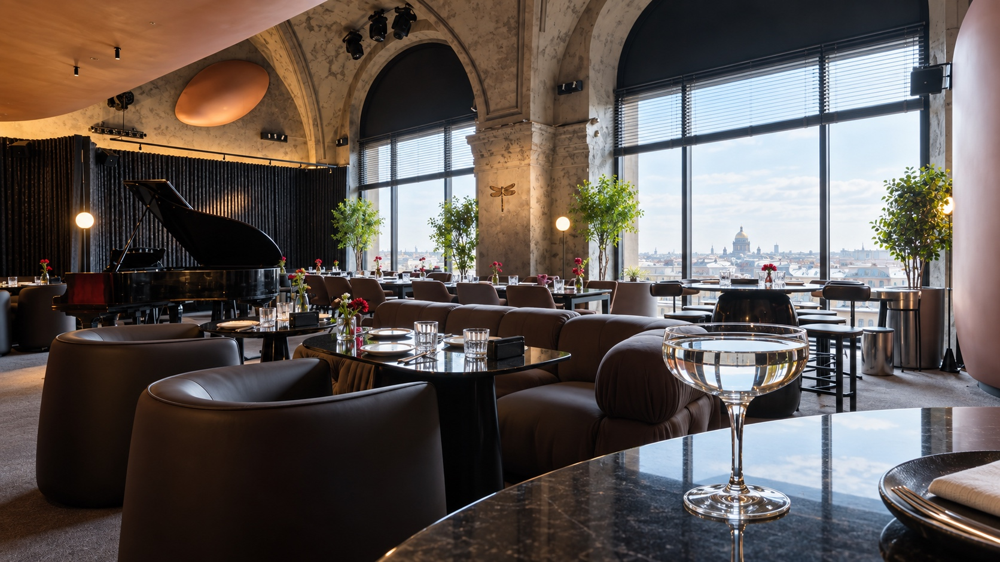
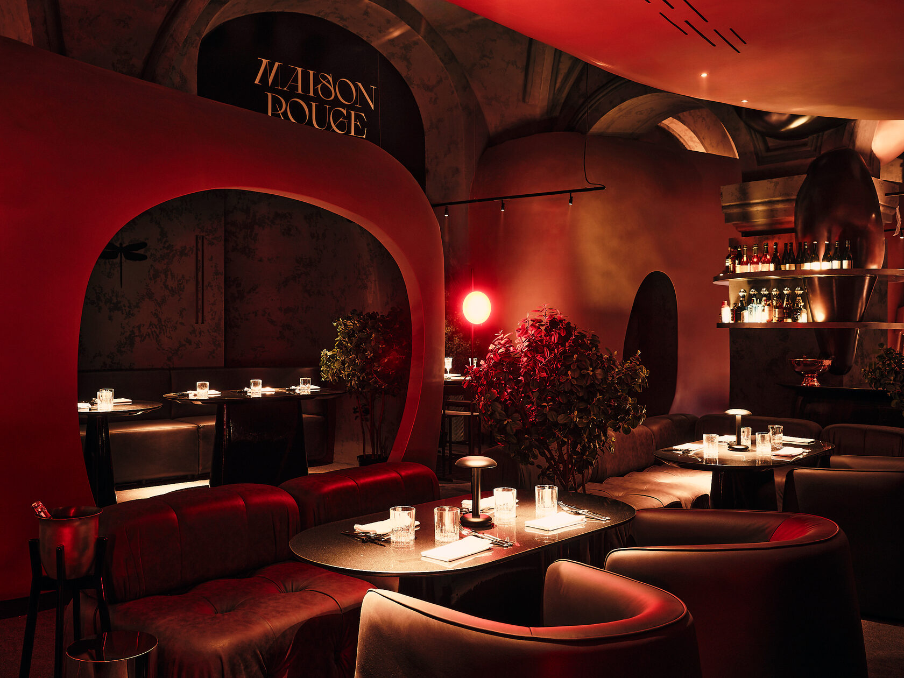
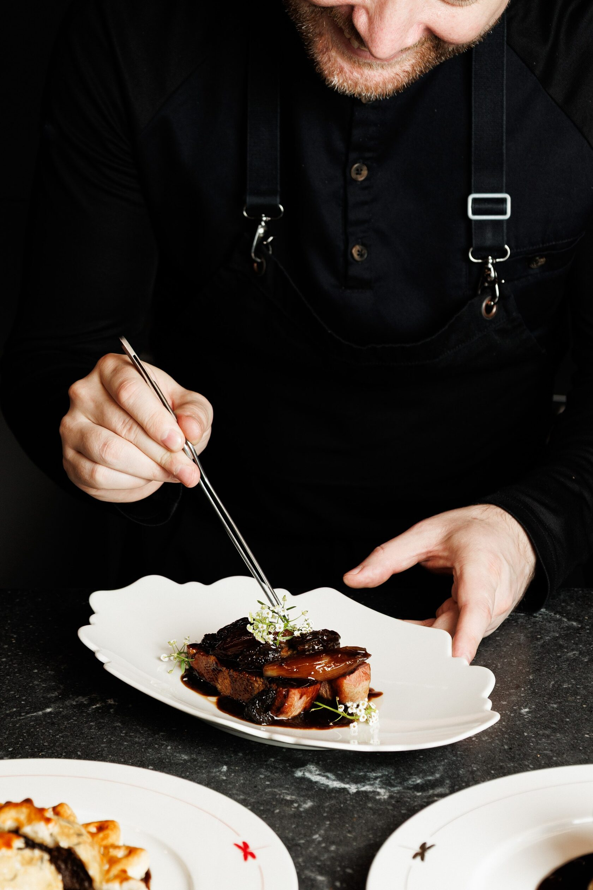
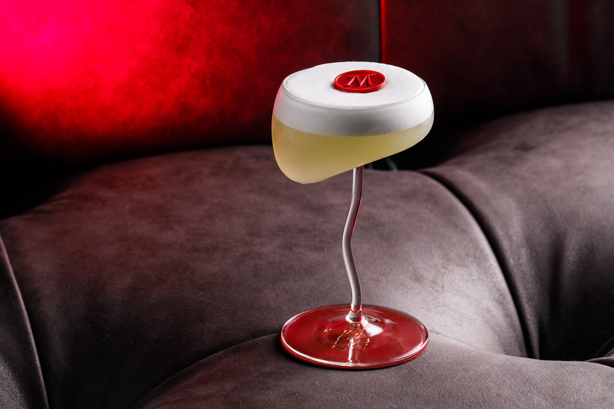
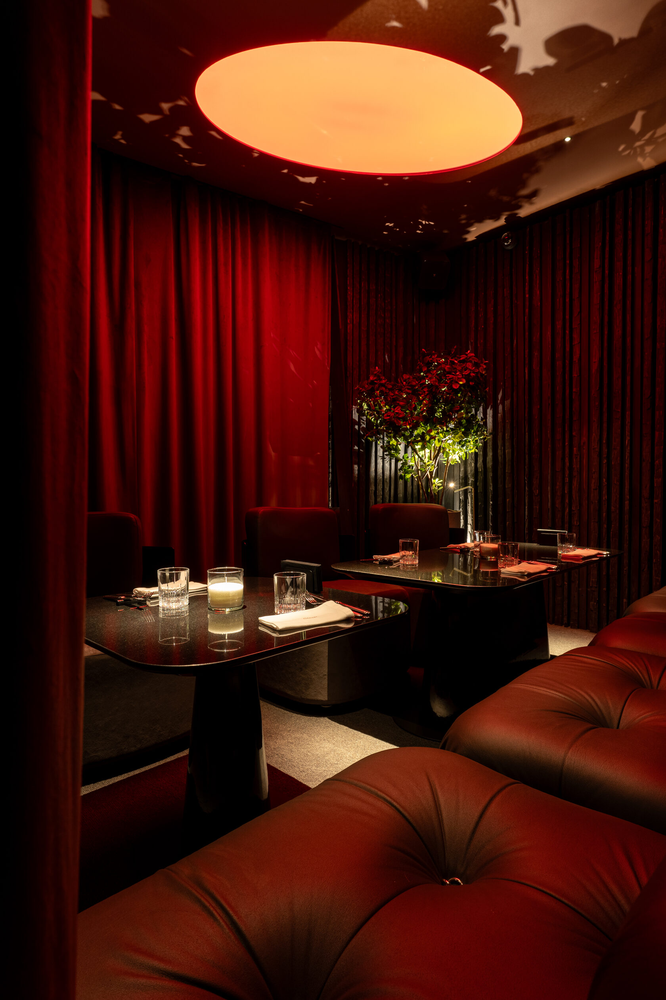
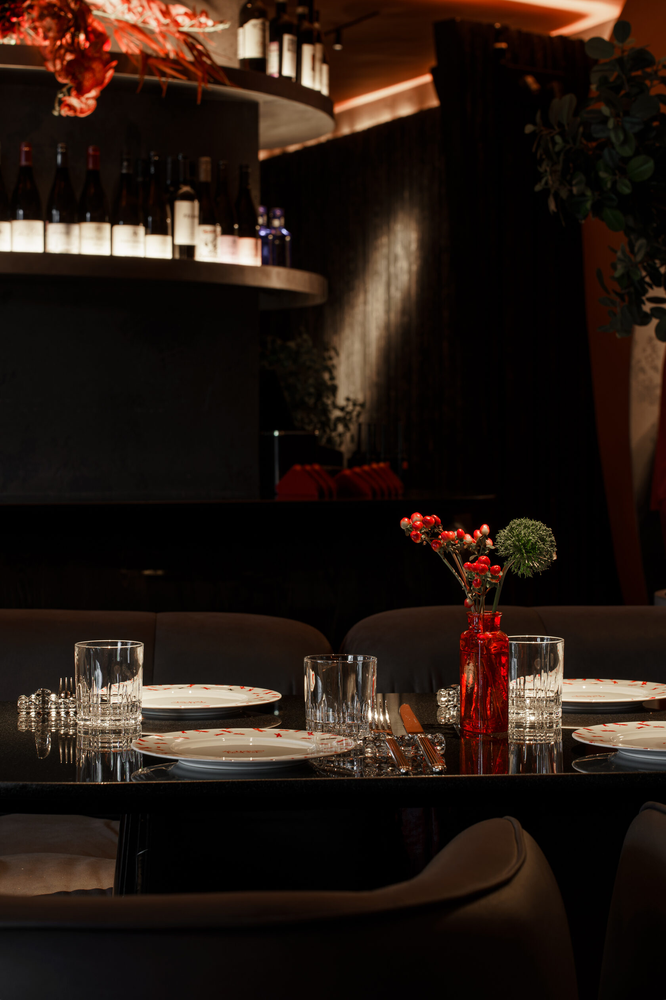
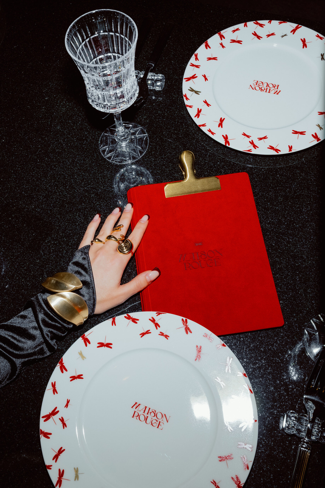
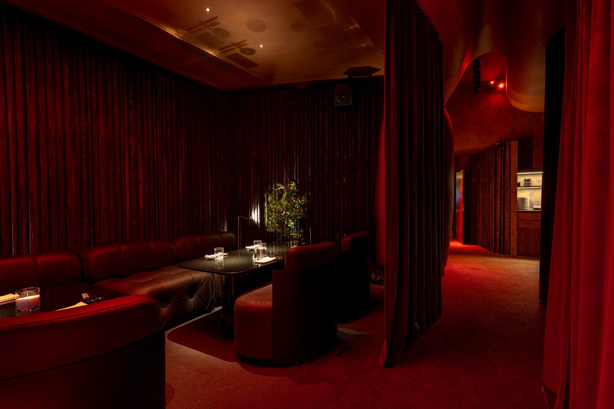

01 / Днём
Ресторан
Французская и итальянская классика, открытое общение и время, которое хочется провести за столом.
Подробнее о ресторане
Санкт-Петербург · Конюшенная площадь, 2Г
Днём — ресторан.После заката — Салон.
Ресторан · Салон
Maison Rouge живёт в ритме города: светлый ресторан для встреч и гастрономии плавно превращается в вечерний Салон с музыкой, коктейлями и особой атмосферой.

Французская и итальянская классика, открытое общение и время, которое хочется провести за столом.
Подробнее о ресторане
Бар, живая музыка и энергия вечера. Здесь у каждого гостя может начаться своя история.
Подробнее о Салоне
Кухня Maison Rouge
Французская и итальянская классика в современном прочтении. За кухню отвечает шеф-повар Антон Счётчиков.
В raw bar — устрицы, морские ежи, икра, крудо из гребешка и карпаччо из лангустинов.
Смотреть менюАвторские коктейли / 12 историй
Листайте напитки, открывайте вкусы и находите свой сюжет вечера.

01 / 03Нежный, фруктовый, с медовым послевкусием.
В составе
Джин Bee Gin, груша и айва, мёд алоэ, лимон, яичный белок.
Интерьер
Историческое здание и интерьер бюро Da Bureau. В зале — уединённые капсулы, контактный бар и множество деталей, которые хочется рассмотреть.



Атмосфера
Днём сюда приходят за разговором и кухней. К ночи зажигается другой свет, звучит музыка, и Maison Rouge становится Салоном.
Афиша СалонаАфиша
Музыка, вечеринки и особые события — следите за ближайшей программой Салона в нашем Telegram.
Смотреть афишу в Telegram
Частные мероприятия
Камерный ужин, праздник или событие для вашей команды — подберём пространство и формат.
Подробнее о мероприятияхПодарочная карта
Впечатление, которое человек выберет сам. Подарочная карта Maison Rouge доступна на любую сумму.
Заказать картуДо встречи